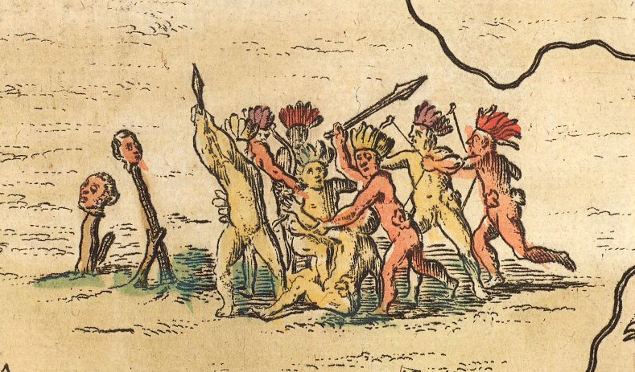

🦀 Expedições e Contatos
🦀 Expedições e Contatos

Recorte do mapa do mundo de Cantino (1502). Pernambuco está entre o cabo de São Jorge e o cabo de São Miguel. Quaresma é um antigo nome da ilha de Fernando de Noronha.
O primeiro contato europeu com as terras do Brasil foi de fato realizado pelo espanhol Vincente Pinzón, como se registrou a história. Uma expedição espanhola, liderada por ele, veio à América do Sul em 1500 e visitou o Cabo de Santo Agostinho. Poucos meses depois, Cabral chegaria à Bahia em uma primeira expedição portuguesa. Nela estava Pero Vaz de Caminha, quem escreveu um dia após sua chegada a Porto Seguro:
E dali vimos homens que andavam pela praia, eram 7 ou 8, segundo os navios pequenos disseram, por chegarem primeiro. […] E o capitão mandou ir de batel à terra, Nicolau Coelho, para ver aquele rio. E, assim que ele começou para lá ir, reuniram-se pela praia homens, às vezes 2, depois 3, de maneira que, quando o batel chegou à boca do rio, havia ali 18 ou 20 homens, pardos, todos nus, sem nada que lhes cobrisse suas vergonhas. Traziam arcos nas mãos e suas setas. Vinham todos rijos para o batel e Nicolau Coelho lhes fez sinal que baixassem os arcos; e eles os baixaram. Ali não pode deles haver fala nem entendimento que se aproveitasse, por o mar quebrar na costa. Somente deu-lhes um barrete vermelho e uma carapuça de linho, que levava na cabeça, e um sombreiro preto. E um deles lhe deu um sombreiro de penas de aves, compridas, com uma copazinha pequena de penas vermelhas e pardas, como de papagaio. E outro lhe deu um ramal grande de continhas brancas, miúdas, que querem parecer de aljaveira, as quais peças creio que o capitão manda a Vossa Alteza. E com isto voltaram às naus por ser tarde e não poder deles haver mais fala, por causa do mar.*
O relato de Caminha cria uma figura inocente e instintivamente devota das práticas cristãs, como descreveu:
Ali disse missa o padre frei Anrique, a qual foi cantada e oficiada por esses já ditos. Ali estiveram conosco na missa algo como 50 ou 60 deles [homens da terra], apoiados todos em seus joelhos, assim como nós. E, quando veio ao Evangelho, que nos erguemos todos em pé, com as mãos levantadas, eles se levantaram conosco e alçaram suas mãos, ficando assim até acabar. E então tornaram-se a sentar como nós. E, quando levantaram a Deus, que nos pusemos em joelhos, eles se puseram todos assim como nós estávamos, com as mãos levantadas e em tal maneira assossegados, que certifico a Vossa Alteza que nos fez muita devoção.
Apesar da missão cristã da busca pela salvação, a existência de habitantes naquela terra não foi motivo suficiente ainda para fixação ali. Esse trecho da mesma carta adiaria os reais planos portugueses:
Nela até agora não pudemos saber se há ouro, nem prata, nem nenhuma coisa de metal, nem de ferro; nem lho vimos.
Recorte de “Americae sive qvartae orbis partis nova et exactissima descriptio” (1562).
Os primeiros contatos não conseguiram gerar interesse na coroa portuguesa, que já explorava colônias na Ásia. Ao mesmo tempo, os espanhóis descobriam imensas reservas de metais em seus domínios.
Uma segunda expedição portuguesa, liderada por Gaspar de Lemos um ano depois da primeira, navega a costa brasileira dando nomes portugueses aos acidentes geográficos da nossa costa de acordo com o santo do dia que ele os avistava. Assim chegou a um cabo no dia de Santo Agostinho e em um grande rio no dia de São Francisco . Nessa expedição, Gaspar descobre a existência de pau-brasil, madeira que fabrica tinta cor-de-brasa, além de possuir características próprias para a marcenaria.
Recorte do mapa do mundo Kunyu Wanguo Quantu (1602).
Não há muitos contatos descritos com tanta simpatia nativa como os de Caminha. Já antes da expedição que marca “o descobrimento do Brasil”, os portugueses já se metiam em conflitos com os nativos por toda a costa. Não é muito difícil de imaginar: os europeus em pouco número queriam levar o máximo de toras de madeira, minérios e outros itens nos porões de seus navios e eles não possuiam número suficiente de subordinados ao trabalho braçal. Por toda a América, os portugueses, espanhóis, franceses e ingleses assaltavam os litorais fazendo esses homens da terra de escravos. Não demorou muito para que as populações locais se voltassem contra qualquer europeu. Na prática, a resistência era um genocídio contra os moradores, uma vez que os invasores possuiam poder de fogo e armas de metal.
Representação dos nativos brasileiros, cabeças europeias decapitadas. “Accuratissima Brasiliae tabula”, Joannes Janssonius (1690).
A notícia da presença de pau-brasil se espalha em Portugal e as primeiras medidas para a exploração da madeira lançam uma terceira exploração. A partir daí, iniciaram-se viagens recorrentes, que além de levar cargas de madeira de pau-brasil para Portugal, ainda pagariam impostos à coroa portuguesa. Nessa terceira exploração encontram-se Américo Vespúcio e Fernão de Noronha, esse último responsável pela primeira feitoria¹ fixa do Brasil, na ilha que hoje tem seu nome. Em resumo, os navios passavam pelo litoral brasileiro derrubando árvores de brasil, abarrotando os barcos e levando-as de volta à Portugal, de onde se processava o material e se vendia para o resto da Europa, que passou a conhecer e se interessar pela madeira.
Como o interesse português nas terras americanas era apenas o mercantil, justificava-se a extração de qualquer jeito e de grande quantidade da madeira contanto que pagasse a viagem (e fosse possível obter lucro). Os navios aportaram em assaltos várias vezes nas praias durante os primeiros 30 anos do século 16. Todas as nações do litoral foram atacadas nesse processo. Em pouco tempo, o pau-brasil passava a desaparecer do litoral imediato e a resistência nativa se intensificava. Uma invasão e fixação portuguesa, assim como os espanhóis haviam o feito do outro lado do continente, tornava-se cada vez mais inevitável.
O pau-brasil já havia dado nome àquelas terras, que serviram nesses primeiros anos apenas como fonte para extração de madeira. Não havia muito interesse português em ocupação até então, mas a necessidade de entrar cada vez mais na terra para a melhor extração e uso do terreno se tornava mais forte com o passar do tempo. Tentou-se invadir por todo o litoral do Brasil, mas um local em específico facilitou o sucesso português. Os portugueses possuiam uma tradição de interpelação já naquele tempo e eles a utilizariam contra os nativos para obter as vantagens desejadas. Ao invés de uma invasão aos moldes clássicos que se mostrava impossível diante do tamanho da população nativa naquele tempo, os portugueses teriam de, literalmente, apelar para sua lábia. Lembram daquela região de conflito entre caetés, tabajaras e potiguares ?
¹ Uma feitoria era um entreposto comercial, tipo um armazém fortificado para failitar o trabalho dos navios portugueses.